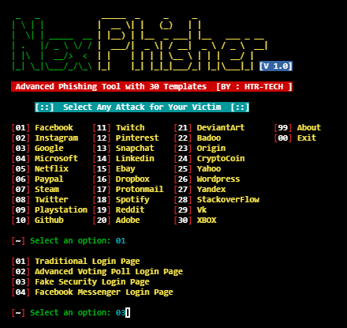
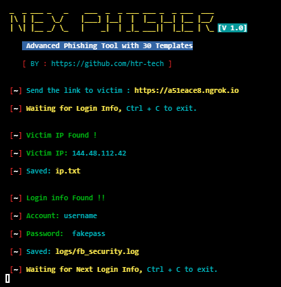

Phishing é uma técnica de engenharia social usada para enganar usuários de internet usando fraude eletrônica para obter informações confidenciais, como nome de usuário, senha e detalhes do cartão de crédito.
Basicamente, O "NEXTPHISHER" É Uma Ferramenta Automática De Phishing Para Linux E Termux. Com Essa Ferramenta Podemos Clonar Uma Página De Inicio De Sessao De Qualquer Rede Social, Enviamos Um Link À Vitima E Quando Ela Entra No Link E Inicia Sessão Será Hackeada Imediatamente.
No Termux Digite:
$ apt update && apt upgrade -y
Agora Digite:
$ pkg install git -y
Em Seguida Precisamos Clonar O "NEXPHISHER", Então Digite Isso:
$ git clone https://github.com/htr-tech/nexphisher
Agora Digite:
$ cd nexphisher
Digite:
$ bash setup
Muito Bem. A Ferramenta Foi Instalada Com Sucesso, Agora Vamos Entrar Digitando O Seguinte:
$ bash nexphisher

Okay, Após Instalar Você Verá Está Interface. Você So Precisa Digitar O Nümero Da Rede Social Que Pretendes Hackear. Após Escolher, Você Terá Acesso À Um Link, Copia E Envia Para A Vítima, Aguarde A Vítima Clicar E Iniciar Sessão Para Hackea-la.
